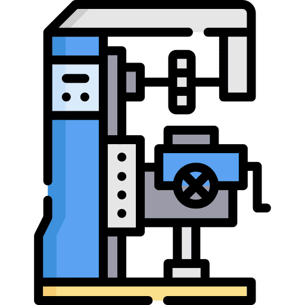

Fresadora CNC
Máquina herramienta avanzada para mecanizado de precisión en diversos materiales mediante control numérico.
Descripción General
La fresadora CNC es una máquina herramienta que realiza mecanizados por arranque de viruta mediante el movimiento de una herramienta rotativa controlada por computadora. Permite realizar diversas operaciones como:
- Vaciados
- Ranurados
- Tallado de engranajes
- Mecanizado de superficies planas
- Taladrado
- Elaboración de ranuras y cavidades
Componentes Principales
- Base o Bancada: Estructura que soporta todos los componentes
- Columna: Elemento vertical que proporciona soporte y rigidez
- Mesa de trabajo: Superficie donde se sujeta la pieza a mecanizar
- Cabezal: Contiene el motor y los mecanismos de rotación
- Sistema de avance: Permite el movimiento de la mesa y las herramientas
- Husillo: Eje principal que hace girar la herramienta de corte
- Control CNC: Sistema que permite programar y controlar las operaciones de la fresadora
Especificaciones Técnicas
| Parámetro | Especificación |
|---|---|
| Potencia del motor | 3-5 HP |
| Velocidad del husillo | 50-4000 RPM |
| Precisión de posicionamiento | ±0.01 mm |
| Materiales de mecanizado | Aluminio, acero, latón, plásticos |
| Área de trabajo | 500 x 250 x 300 mm |
| Peso | 250-350 kg |
Tipos de Fresadoras
- Fresadora Vertical: Husillo perpendicular a la mesa
- Fresadora Horizontal: Husillo paralelo a la mesa
- Fresadora Universal: Permite movimientos en múltiples ejes
- Fresadora CNC: Control numérico por computadora para mayor precisión y automatización
Aplicaciones Industriales
- Fabricación de piezas mecánicas
- Industria automotriz
- Construcción de moldes
- Industria aeroespacial
- Fabricación de herramientas
- Prototipado industrial